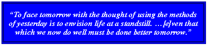

|
|
|
Presented to the class by
1960 Sailors
Association
Inc.
A fellowship of
classmates |
|
|
|
|
|
The members of Class of 1960 of Oceanside
High School, Oceanside, Long Island, New
York, have learned over the years, largely through a series of
wonderful class
reunions,
that there is
something special that bonds so many of our classmates
together after
being dispersed over great
distances and separated for over five and a half decades.
And as we prepared for and attended our
40-year
reunion, at the dawn of the new
millennium, in the year 2000, when this
website was first created, it became apparent that bond
the among us is even stronger than ever. And by now, we have celebrated our
55-Year Reunion!
|
|
|
|
|
|
"I am the Spirit of the graduating class of 1960. I am a mixture of its
laughs, its tears, is cries of victory, its groans of defeat. I have
over five hundred facets, my seniors, each one adding his own lustre and
sparkle to the whole ... for in your shining faces is compounded that
intangible thing, spirit, which makes a high school outstanding.
"... The end of this school year will mean to some
of you the breaking of ties, ... the separation of old friends. ... For
all, however, it will be a momentous time, a time of change. ... I will
not, however, for as long as you remember this year, I will flourish and
grow."
|
|
|

 |
| |
―
Spindrift, 1960 |
|
|
|
|
Over the last
half century and more, our classmates have earned high achievements
in careers in virtually all fields of endeavor, including,
among others, business, law, medicine, accounting,
government and education. We have raised our children
and been blessed with grandchildren, among the other fruits
of our labors that we now enjoy. But we have not forgotten
our most formative years as a class at
Oceanside High School and
before that, at what we then called
Oceanside Jr. High School.
These fond memories that we share of those less complicated
times we spent together growing up in
our little town have given us, as a
class, a bond of friendship that we believe must
be unmatched. Our sincere appreciation is not only for the
wonderful times, our friendships and social experiences
spent together there,
but it extends also to the high quality of education that we
received there over 50 years ago.
|
|
|
|
We
have learned over the years that there was a great deal of truth in the 1960
Spindrift
prophesy quoted above. The
proud Class of 1960 was a
very special
class of
Sailors, the last class to have spent
virtually all of its
high school years in the magical
1950s
─ when high school
was a
very special place
to be, indeed ─ the stuff legends are made of!
Although we have drifted apart in years and miles, so many of us
remain closely bound together in our hearts and spirits and our shared
memories. Appropriately, one classmate (Lloyd Becker) termed that special something, "The Spirit of
'60."
(So that's what we named
our cyber-cruise ship.)
|
|
|
|
Another one of our
classmates (Karen Nover) observed that "our nostalgic
feelings for our high school days are completely disproportionate to
the brief time we spent there." Yes, ours were certainly
times worth remembering ─ precious and short-lived, indeed.
And we may wonder why we remember these happy days from
1954 to 1960 (and most particularly, the high school years) more
fondly and vividly than any other period of our lives quite as fleeting,
and why we had so much fun concentrated in so little time. Surely, it was
in large part a function of
the times and of our time of life as teenagers
(see
The Way We Were). But mostly, I
think, it
was that we spent virtually all of our time surrounded by all of our
dearest and wonderful friends. It just doesn't happen like that any more,
either in
our careers (where most of us spend 40 years or more) or anywhere
else in our "adult" worlds.
This is probably why we are so nostalgic. And it is a great
privilege for
the
1960 Sailors
Association
Inc.
to be able to help these nostalgic feelings rise to the
surface of your consciousness. |
|
|
|
On the
many pages of this site, you will find
the most incredible and nostalgic virtual time trip of your life
─
an electronic scrapbook in
celebration of our youth, a cyber-monument to our hometown memories, and an online museum featuring
a sentimental journey back to the kinder, gentler place and time that we shared when we were young. It is very likely the closest thing to time travel you will ever experience
─
over
200 pages
and
90 megabytes, with close to
3,000 embedded photo
and other
graphic image and sound files for your pleasure. It is
quite possibly the largest collection of electronic memorabilia of its kind
from its time ever assembled on the web
─
an electronically simulated re-creation of your own adolescence.
One classmate (Barbara Blum) called it, "a bridge to the
past." Another (Bobbi Traynor) wrote, "With one click, I've
been brought back to my youth,"
and a third (the now late Barbara Rubeck) wrote, "I have never seen nor
felt anything like it." Tom Naumann called it "an intense, emotional, nostalgic journey, activating my memory
cells to recall the past with pleasure and enjoyment,"
Bobbi Alfin said "Every
time I go there, it makes me feel like 16 again,"
and Ed Chilton (now
deceased) wrote: |
|
"We think the website is
the best example of its genre on the worldwide web.
1960sailors.net goes beyond simple
class reunions and linking of
old friends to examine the culture and times in which we lived.
It also examines in detail some of the forgotten or overlooked
history of Oceanside and Long Island/NYC surround."
|
 |
Read more of how our classmates and
others have been cheering about this site.
Start here,and
follow the links. |
|
|
|
Andy Rooney once said on 60 Minutes, "Sometimes, all you can
remember is what you would rather forget." Well, here on this site
is a lot of stuff you would likely rather remember. Here you will find —
carefully chronicled, in words, images and that wonderful music of
our youth ─ our music
─ more memories than ever found in any traditional high school yearbook. With memories and melodies inseparably
intertwined, we richly recapture the brief time we spent bound together as a unit, a great
class of
Sailors
─
just six short years of adolescence from junior high through high school
graduation. And here you will also find a record of our
fabulous
reunions,
too, where we periodically shared, rejuvenated and rekindled those
sometimes fading memories of the joyous time we spent together.
Because it was such a
special time that we all shared, and because as we keep getting
older, we realize more and more how special it was
─
that is why we
need the
1960 Sailors
Association
Inc.
─
and
that is why we need a
class website! |
|
|
|
Click here to
read the a full-page article about this
website published February 15, 2007, in the
Oceanside/Island Park
HERALD
(successor
to the
Beacon
of our time).
|
|
At the end of the popular Broadway
musical about high school life in the late 1950s, Grease, the
graduates sing, "We will always be together," a highly
impractical and unlikely goal for the rapidly increasing mobility of society of
our times. No
longer was it, or would it ever be again, customary to live one's entire life in
the same neighborhood with one's parents, grandparents, children and
grandchildren. Well,
Sailors,
now, through the magic of technology, we
can be together
again despite our lives' divergent voyages.
Through this
class website ─ our very own technological time
capsule ─ we can now enrich the sunset years of
our lives, share our nostalgic sentiments,
reconnect with our past, and refresh our aging,
fading memories of that short
but
very special time
that we spent in almost daily contact with one
another.
And we can examine and explore the
reasons for our
very special and
lasting bond,
consider how lucky we were, and try (hopeless as
it may
seem) to explain it to our children and
grandchildren.
|
|
 |
|
And speaking of technology, the
following quote was used
by Gerda Balding (now, Mrs. Joe Kunkel), at the opening of her prophetic
commencement valedictory address to our class on our
Graduation
Day, June 26, 1960. |
|

—
James F. Bell
|
|
Click here for the
full
text of Gerda's valedictory address, which she was so kind to share with us
again for this website. And Gerda graciously supplemented it there for us
forty years later
with her present day perspective that includes the following words, apropos to
the question, "Why a class website?":
"… there is ─ I believe
─ some relationship
between the optimism of 1960 and that of our high-tech shift into Y2K.
Sandwiched between the two experiences were 40 years marked by a lost war,
public cynicism, and a widening rift between participants in the American
Dream and the marginally successful, but also by Human Rights Movements, the
end of the Cold War, and a computer revolution." |
|
─
Oceanside High School’s
Alma
Mater
|
So climb aboard our
rockin'
'n' rollin' cyber-cruise
ship,"The
Spirit of '60," and
let's set sail! |

|
POSTSCRIPT:
Someone sent me the following piece,
which is called "KEEPERS." It was written by an unknown author
who articulates a moving sentiment that many of us share, and it is worth reading:
"Some
things you keep. Like good teeth. Warm coats. Bald husbands. They're good for you, reliable and practical and so sublime
that to throw them away would make the garbage man a thief. So you hang
on, because something old is sometimes better than something new, and what you
know is often better than a stranger.
"These are my thoughts, they make me sound old, old and tame, and dull at
a time when everybody else is risky and racy and flashing all that's new and
improved in their lives. New careers, new thighs, new lips, new cars.
The world is dizzy with trade-ins. I could keep track, but I don't think
I want to.
"I grew up in the fifties with practical parents
─
a mother, God bless her, who washed aluminum foil
after she cooked in it, then reused it
─
and still does. A father who was happier
getting old shoes fixed than buying new ones.
"They weren't poor, my parents, they were just satisfied. Their
marriage was good, their dreams focused. Their best friends lived barely
a wave away. I can see them now, Dad in trousers and tee shirt and Mom
in a house dress, lawn mower in one hand, dishtowel in the other. It was
a time for fixing things — a curtain rod, the kitchen radio, screen
door, the oven door, the hem in a dress.
"Things you keep. It was a way of life, and sometimes it made me
crazy. All that re-fixing, reheating, renewing, I wanted just once to be
wasteful. Waste meant affluence. Throwing things away meant
there'd always be more.
"But then my father died, and on that clear autumn night, in the chill of
the hospital room, I was struck with the pain of learning that sometimes there
isn't any 'more.' Sometimes what you care about most gets all used up
and goes away, never to return.
"So, while you have it, it's best to love it and care for it and fix it
when it's broken and heal it when it's sick. That's true for marriage
and old cars and children with bad report cards and dogs with bad hips and
aging parents. You keep them because they're worth it, because you're
worth it.
"Some things you keep. Like a
best friend that moved away
or a classmate you grew up with, there's just some things that make life important
... people you know are special ... and you keep them close!"
Copyright
© 2000-2021 by Howard B. Levy and
1960 Sailors
Association
Inc. All rights reserved.
 |